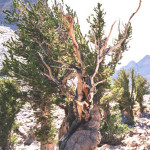
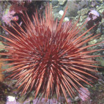
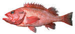

Porqué existe la vejez y la muerte [Serie: Vivir para siempre 2]
Si vivimos lo suficiente, vamos a envejecer, lo que eventualmente nos conducirá a la muerte. Sabiendo esto, la mayoría de las personas hacen algunos esfuerzos intentando retrasar la vejez y conseguir vivir el mayor tiempo posible.
Sin embargo, esos esfuerzos rara vez se encaminan a tratar de entender al envejecimiento, pero como sabemos, la mejor forma de entablar batalla es conocer al enemigo, por lo que en este artículo veremos las teorías que del origen del envejecimiento existen.
¿Por qué envejecemos?
Desde nuestra infancia conocemos a los ancianos, y sabemos que las personas van cambiando con los años, por lo que la vejez nos parece algo normal y natural (por supuesto, después de un período de resistencia ante lo que nos muestra el espejo con el paso de los años).
Rara vez nos preguntamos sobre la razón para que exista el envejecimiento, dado que creemos que es universal, pero no es así.
Algunos ejemplos de seres vivos que no muestran signos de envejecimiento[1] con la edad son:
-Pinos Bristeclone: Alcanzan una edad hasta de 5000 años y no muestran decadencia de su capacidad reproductiva con la edad.
-Tarántulas hembra: Llegan a vivir más de 25 años sin mostrar signos de envejecimiento.
-Rougheye rockfish (Sebastes alutianes): Pez que habita en el norte del Océano pacífico en la zona del Estrecho de Bering, se calcula que llega a vivir 205 años con signos de envejecimiento prácticamente nulos.
-Las tortugas: Tortuga caja de Carolina, que puede vivir hasta 138 años; y la Tortuga de las Galápagos, con una esperanza de vida de 177 años. Ambas especies (de Carolina y de las Galápagos), muestran señales de envejecimiento desdeñables.
-El erizo rojo de mar: Se estima que puede vivir 200 años, sin mostrar signos de envejecimiento.
Si no todos los animales envejecen, ¿por qué el envejecimiento es casi universal?
Entender el origen del envejecimiento podría ayudar a encontrar cómo contrarrestarlo, tarea a la que se dedican numerosas investigaciones. Veamos ahora las posibles explicaciones al fenómeno del envejecimiento, que finalmente conduce a la muerte
Buscando las razones para morir (por vejez)
Desde el siglo XIX, y con el surgimiento de la teoría de Darwin de la selección natural empezaron a darse las primeras teorías sobre la razón para que exista el envejecimiento.
La muerte está programada
Una de las primeras explicaciones fue que existe un mecanismo de muerte diseñado para eliminar a los individuos viejos y ‘gastados’, y así hacer espacio para las nuevas generaciones. Esta teoría fue propuesta por August Weismann en 1882.
{kind=link}
En la actualidad esta explicación para la muerte ha sido desacreditada, dado que no se ha podido descubrir el mecanismo bajo el cual la evolución hubiera propiciado la aparición de la vejez. Tampoco se ha encontrado a la fecha el mecanismo de muerte propuesto por Weismann.
Uno de los aciertos de esta teoría fue la predicción de que las células tienen un número límite de veces que pueden reproducirse (límite de Hayflick). Aunque tal límite no representa un mecanismo de muerte en sí mismo.
Acumulación de mutaciones
Esta teoría, propuesta por Peter Medawar en 1952, dice que dado que el propósito fundamental (desde el punto de vista de la evolución) de un individuo es reproducirse, una vez pasado la etapa de reproducción, no hay razón para que los seres vivos se mantengan aptos y saludables una vez superada cierta edad. Por lo anterior, las mutaciones dañinas que se manifiesten después de la edad reproductiva no tienen importancia evolutiva, y son transmitidas a las siguientes generaciones. Esas condiciones genéticas son las que causarían el envejecimiento y la muerte.
{kind=link}
Esta teoría también tiene sus críticas, porque un organismo en vejez temprana puede morir más fácilmente a causa de predadores o circunstancias ambientales por la desventaja de su edad. Esto haría que los individuos que no tuvieran esas mutaciones estuvieran en ventaja y podrían propagar sus genes por más tiempo, con el resultado de que el envejecimiento se iría postergando por selección natural, lo cual no es lo observado en la naturaleza.
Pleitropía antagonista
Esta teoría de nombre tan raro dice que la muerte por vejez proviene de que los mismos genes que pueden ser beneficiosos en ciertos aspectos, son dañinos en otros. La vejez se originaría porque, a causa de los beneficios que recibimos en etapas tempranas de la vida tenemos consecuencias cuando somos mayores, esto es: envejecemos.
{kind=link}
Un ejemplo de cómo la selección natural conduciría a la vejez, a pesar de sus desventajas, es que una mayor fertilidad en edades tempranas, es preferible para la especie desde el punto de vista evolutivo, aunque signifique la existencia de la senectud y la muerte en el individuo.
Esta teoría, propuesta por George C. Williams en 1957, es la más ampliamente aceptada en la actualidad, aunque no ha sido del todo verificada.
Teoría del soma disponible
Fue propuesta en 1977 por Thomas Kirkwood, y afirma que los seres vivos poseemos una cantidad limitada de energía asignada, la cual debe ser administrada por el organismo.
La energía debe ser repartida entre la reproducción y el mantenimiento (soma) del organismo. Al asignarse energía a la reproducción, con el tiempo los daños celulares y las mutaciones se acumulan por no haber una reparación adecuada.
Esta teoría explica porque los ratones, con una tasa de reproducción tan alta debido a la abundancia de predadores, tienen vidas cortas. Así como la larga vida de los seres humanos, se debe a que no tienen predadores, y por tanto tienen más tiempo para reproducirse.
Sin embargo esta teoría tiene la desventaja de que no explica cómo, frente a una escasez de energía (restricción de alimentos), la vida de muchos organismos es extendida, en lugar de acortarse, como predice la teoría.
–
Ninguna de las teorías expuestas ha sido completamente comprobada, y siguen siendo en la actualidad motivo de controversia entre los biólogos y gerontólogos que estudian el origen de la vejez. Lo importante es que descubrir exactamente porqué envejecemos y morimos, puede ser relevante para, en un futuro, extender nuestro tiempo de vida.
Fuentes y referencias:
Pueden visitar los enlaces en el artículo para ampliar la información, pero en particular los datos referentes a los organismos que no envejecen los encuentran con profusión de detalles en:
[1].- Senescence.info: Some animals age, others may not
Con respecto a las teorías sobre el envejecimiento, pueden visitar en la Wikipedia en inglés: Wikipedia: Evolution of ageing
También en Senescence.info, se encuentran explicadas estas teorías en: Senescence.info: The Evolutionary Theory of Aging
Y para aquel que desee saber más, está el artículo completísimo sobre la historia de las teorías evolutivas de la vejez y la longevidad, de Leonid A. Gavrilov y Natalia S. Gavrilova:
Evolutionary Theories of Aging and Longevity
TheScientificWorldJOURNAL (2002) 2, 339-356
Leonid A. Gavrilov and Natalia S. Gavrilova
Artículo anterior en esta serie: La búsqueda de la inmortalidad: Historias, leyendas y mitos que surgieron en la antigüedad sobre la búsqueda de la inmortalidad y de la juventud eterna.
Metadatos y acciones
 Temas: biologia, vida ⋅
Para guardar: Enlace permanente a esta anotación.
Temas: biologia, vida ⋅
Para guardar: Enlace permanente a esta anotación.
 Print This Post
Print This Post
Comentarios
Los comentarios están cerrados.
Categorías
Últimas 4 anotaciones
Últimas anotaciones en cada categoría

Divulgación
El dinero no fomenta la creatividad: Daniel Pink en TEDGlobal 2009

Inspiración
Los 30 no son los nuevos 20

Noticias
Ver tu mente en tiempo real: Christopher deCharms en TED 2008
![Música en la era digital [Animación]](../../../wp-content/themes/tma/images/featured/animation_04_2009_featured.jpg)
Ocio
Música en la era digital [Animación]
septiembre 11, 2010, 8:56 pm
creo que estamos a un paso de lograr el retraso del envejecimiento el secreto esta en descubrirlo y eso se encuentran en varios factores como el codigo genetico, factor ambiental y nucleo de la celula y como lograr reponer las celulas ya en su etapa de envejecimiento logrando que el mismo organismo logre dominar su capacidad de rejuvenecimiento a través de algunos estimulo fisico-quimicos
noviembre 7, 2011, 11:51 pm
Quiero decir la verdad, existe un Dios en los cielos que es el unico ser que ha existido desde siempre, El es el unico dador de vida, su poder es sempiterno y durante siempre estuvo solo hasta que decidio dar vida a otros seres, su primera creación fue el Arcangel Miguel, aqui en la tierra lo conocemos como Jesús, su hijo y juntos crearon angeles y con el tiempo desidieron crear la vida terrestre y creó al primer hombre y mujer, Adán y Eva, Jehová los hizo perfectos en todo el sentido de la palabra, pero el envejecimiento dio origen cuando ellos se revelaron contra su creador. El ya se los habia advertido y a sabiendas pecaron contra El y envejecieron y murieron. Por eso Jesus entrego su vida para recuperar la vida humana perfecta que tenia Adan antes de pecar y hoy nosotros somos descendientes de Adán, esa es la razon, la humanidad nunca logrará evitar el envejecimiento, solo Jehová Dios puede hacerlo y así lo hará con las personas de genio apacible y humildes de corazon dentro de unos años.
noviembre 18, 2011, 5:25 pm
La vida esta programada para el equilibrio con el planeta, imaginemos la tierra como una pecera siempre habiendo nacimientos y no muertes, asi La pecera comienza con una pareja de peces se reproducen de a dos huevos ya son cuatro pero la pecera tiene capacidad para advergar a 4000 peses con un espacio suficiente para nadar alimentarse en los lugares de alimentos y con el espacio adecuado para su esparcimiento y descanso.
Al cabo de llegar a reproducirse los 4.000 peces no hay mas espacios para cada actividad, entonces la pecera se llena con 5.000 peces estos mil peces mas ocupan el espacio adecuado de descanson y esparcimiento de los demas peces que estaban comodos, igual que en una carcel poble los problemas de asinamiento emergen, pasa un tiempo y los peces se multiplican a 6.000 ya no solo se perdio un espacio de comodidad sino que los 2.000 peces de mas ocupan el lugar donde crecen los alimentos y donde los consumen sin dañar las plantas, ahora son dos problemas por la sobrepoblaciòn, ahora que han dismuido los alimentos de los 4.000 peces iniciales porque en realidad hay mas de 4.000 y ademas los lugares de alimentos disminuyen. produciendo pues hambruna y con el tiempo muerte ( pero imaginemos que solo sea hambre ya que no habria muerte) al paso del tiempo los peces se reproducen a 7.000 si con 6.000 peces se redujo la pecera a la mitad que tal con 7.000 que otros problemas surgirian estreches y asficia. entre tanto la pecera alcanza los 8.000 peces seria imposible movilizarcen los peces con tantos peces apretados dentro la pecera. Pues bien Dios Vio a si el Mundo A futuro y por eso le dio al hombre una edad que disfrura que le permitiera nacer crecer alegrarse realizarse y reproducirse esta es la edad que Dios protegio despues de esta etapa del crecimiento comienza la decadencia que es la vejes asi el ser humano y todos los seres vivos cumple el plan ordenado de Dios de que los hombres vivan libres y comodos mediante el equilibrio de la vida y la muerte, Dios hizo pues la balanza para que el hombre y el mundo no desaparecieran haci pues el hombre cumplio con no dejar estinguir su existencia.
Otro caso particular son los objetos que producen las fabricas un carro de buena calidad con materiales resistentes durara entonces 100 años pero con el tiempo los industriales no ven ventajas con hacer autos tan duraderos ya que no venden repuestos ni venden mas autos, entonces comienza a producir autos de vaja calidad que acaso duren 45 años. ver entonces la logica.
julio 29, 2012, 8:55 pm
es la mejor imformacion que se puede buscar en internet
julio 29, 2012, 8:55 pm
que linda es esta imformacion
julio 29, 2012, 9:08 pm
la verdad que la vejez y muerte son naturales asi que no hay por que asustarse por cosas asi por que es natural y asi lo dejo dios y asi sera
septiembre 5, 2012, 1:25 pm
Creo que antes de discutir el tema del origen de la vejez, habría que analizar cual es nuestro origen. Es decir si venimos por evolución o por creación. Yo he analizado ambos temas al fondo y veo que la evolución tiene muchas lagunas que las trata de llenar con “supongamos que…” etc.
Cuando estaba por publicarse una edición especial de centenario de El origen de las especies, de Darwin, se invitó a W. R. Thompson, entonces director del Instituto de Control Biológico de la Comunidad Británica de Naciones en Ottawa, Canadá, a escribirle la introducción. En esta, él dijo: “Como sabemos, hay gran divergencia de opinión entre los biólogos, no solo en cuanto a las causas de la evolución, sino hasta en cuanto al proceso mismo. Esta divergencia existe debido a que la prueba es insatisfactoria y no permite llegar a ninguna conclusión segura. Por tanto, es correcto y apropiado llamar la atención del público no científico a los desacuerdos que existen respecto a la evolución”.
Para los que creemos en la creación, nos remontamos al origen de la humanidad en la Biblia para encontrar la respuesta de porque envejecemos. Leamos por favor Génesis Capitulo 2 y 3 y comparemoslos por favor con Romanos capítulo 5 versículo 12.
marzo 9, 2013, 11:31 pm
yo creo que la vejes es producto de la mente y el pensamiento o conciencia colectiva somos como esponja todo lo absorvemos lo asimilamos si no creyeramos en la vejes y la muerte nunca moririamos ahora se puede prolongar mas el tiempo de vida la gente ya esta programada para vivir un poco mas pero eso no es suficiente en el futuro las nuevas generaciones viviran mas años 200 o 300 o mas y asi asta llegar a la inmortalidad pero eso sera en un mundo diferente con pensamientos diferentes
septiembre 4, 2014, 11:46 pm
Coincido plenamente con el comentaro de tu_pincho@hotmail.com. Es también a lo que he arribado como conclusión. Y creo firmemente en el poder de las ideas en las masas atrapadas en el sectarismo de un pensamiento que conviene a un sistema u orden.
diciembre 10, 2016, 3:45 am
exacto , tenemos q vencer la ignorancia y elfanatismo
religioso para poder tracender y no caer en la estupides y
flojera mental en la que caen muchos,como algunos que aqui
comentaron y no dire nombres.